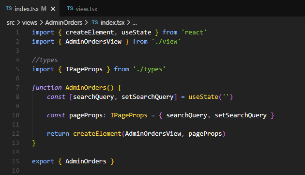
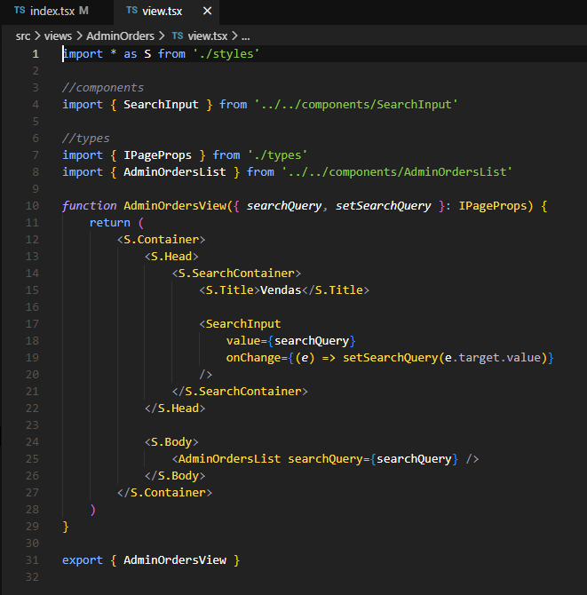
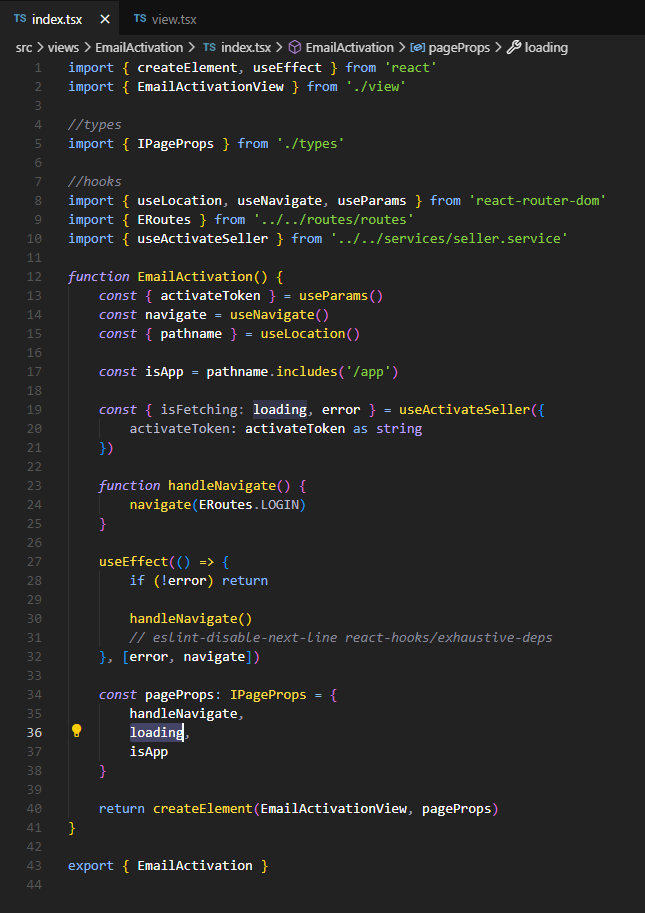
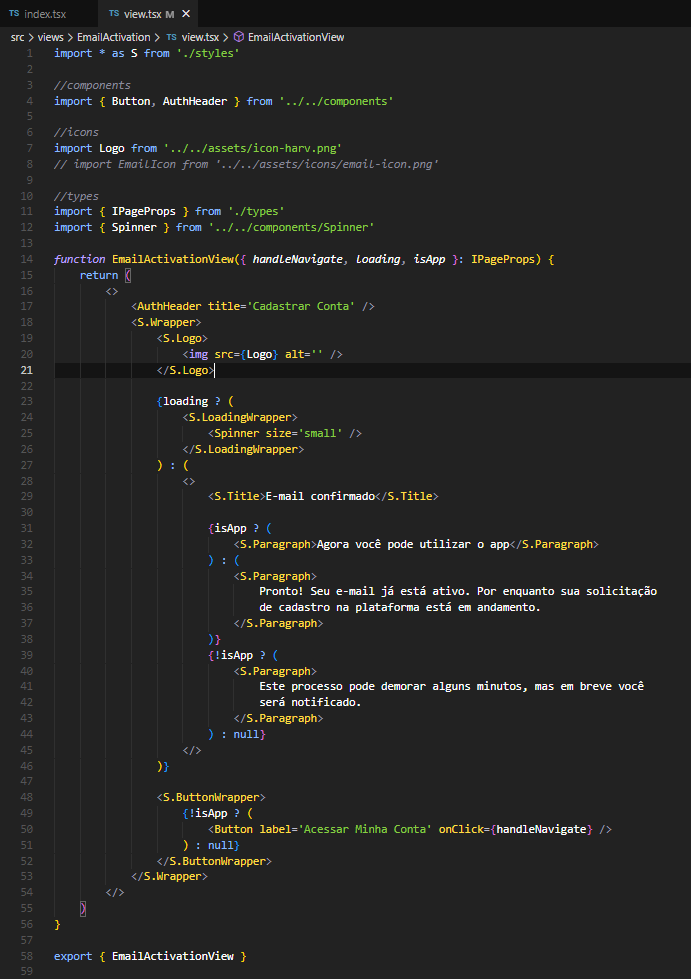

2.12- Controller/View
O padrão (ou design pattern) Controller/View é uma forma de reorganizar um componente React em dois componentes, uma parte que chamamos de Controller e uma parte que chamamos de View, com as responsabilidades descritas abaixo.
View - Faz toda a renderização (JSX) do componente. - Não possui nenhum state e todas as informações a dinâmicas a serem renderizadas são recebidas como props.
Controller
- Na reorganização do componente original, a parte Controller fica com todos os states do componente original e se torna o único responsável pela aquisição e manutenção das informações desses states, portanto, todos os acessos a APIs externas e bancos de dados são feitos neste componente e, também, os hooks do tipo useEffect(), responsáveis pelas atualizações de state em sequência, são todos executados neste componente.
- Não possui nenhuma rederização, exceto a chamada do respectivo componente View, no return final do componente Controller, como no código abaixo:

Neste exemplo, nosso componente Controller é o componente AdminOrders e o componente View é chamado de AdminOrdersView.
Veja o código do componente View abaixo.

Observe como todo o state fica no Controller, neste caso searchQuery, e como toda a lógica de renderização é mantida no componente View
Na Build adotamos sempre como padrão declarar o Controller e a View em arquivos seprados, sendo o nome do arquivo do Controller sempre chamado de index.tsx e o nome do arquivo que contem o componente View sempre chamado de view.tsx.
Outra regra que usamos é que este padrão é usado apenas para componentes mais complexos, com mais código e lógica, sendo normalmente usado nos componentes que representam telas, localizados na pasta /src/views e não sendo usado nos componentes salvos na pasta src/components, pelo fato destes serem componentes reusáveis, tipicamente, mais simples.
Outro exemplo, um pouquinho mais complexo, é mostrado a seguir, o componente EmailActivation. Primeiro, mostramos a parte Controller, abaixo.

e depois a parte View, a seguir

Note como todos os state, neste caso declarados em Hooks e como toda a lógica de busca e manutenção desses states estão no Controller e como toda a lógica de renderização foi colocada na View.